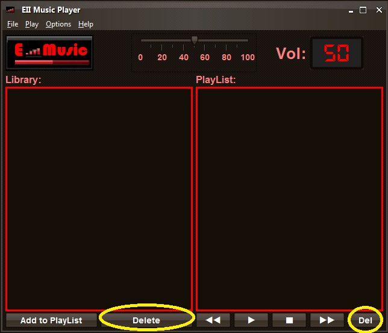

Seleccione la cancion o canciones que desea eliminar tanto y pulse el boton "Delete"(en la libreria) o el boton "Del"(en la lista de reproccion).
Tambien puede borrar toda la lista de reproduccion o la libreria o ambas desde el menu Options.
Nota: Si la cancion se esta reproduciendo en ese momento se detendra la reproduccion.
